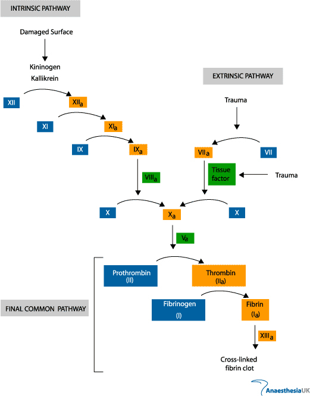
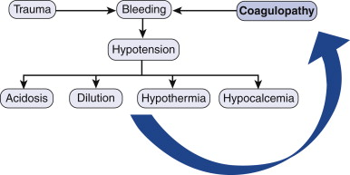

Blood Transfusion and Coagulopathy
Allogenic Blood Products
1. Whole Blood
Limited indications and rarely used.
- mainly used in military setting and field emergencies.
Stored in 500mL bags, last only 35d
Does not expose donors to multiple sources.
2. Packed RBCs
Provides oxygen carrying capacity to tissues
Indicated for shock, ongoing haemorrhage, marked anaemia
- loss of 30% of blood volume generally requires transfusion.
- symptoms of anaemia unlikely to manifest until Hb <70-80.
- restrictive transfusion at trigger of 70, with goal of maintaining
70-90, reduces mortality in critically ill (TRIGG trial)
--> and does not worsen outcomes in patients with cardiac
comorbidities
Use depends on volume status, age, comorbidities
Increase Hb 10 or Hcrit by 3%
Safety and immunity
Data on transfusion safety is variable
- some studies show increases in infections, stroke and death from
transfusion
- transfusion has an immunosuppressive effect
- essentially post-operative patients should have same cutoff of
about 70, based on evidence from thoracic surgery / cardiac
patients.
Leukocyte reduction in the blood reduces some bad effects of
transfusions; immunological, fevers, reactions
--> but added cost means that removing leukocytes not often done.
Washing RBCs removes plasma proteins and is indicated in patients
with allergic reactions.
Radiation eliminates T lymphocytes and reduces graft v host in bone
marrow pts.
3. Plasma
Provides coagulation factors, including fibrinogen, vWF, vit
K-dependent coagulation factors-II, VII, IX, X, and VIII and XIII.
Frozen at -18o and stored up to 1y
- 1u is 250ml and provides factors for a 70kg pt.
FFP indicated for coagulated defects and rapid reversal of
anticoagulants.
- e.g. if INR >1.6
Guidance by clinical bleeding assessment and quantitative
coagulation tests, including point-of-care tests
(thromboelastograph)
4. Cryoprecipitate
Certain factors precipitate out of plasma in the cold, these
provided by cryo
Fibrinogen, fibronectin, factors VIII, XIII and vWF
Indicated for pts with fibrinogen deficit, factor XIII deficit,
massive transfusion and platelet dysfx due to renal disease
10u of cryo contain 2g of fibrinogen and raise fibrinogen by 60g/L
Give when fibrinogen drops below 100g/L in setting of bleeding or
ongoing transfusion.
Coagulation cascade

http://www.frca.co.uk/article.aspx?articleid=100096
Balanced by endogenous antithrombotic proteins - C, S, antithrombin
III and thrombomodulin, negative feedback.
- fibrinolytic system also plays a role in limiting the extent of
clot formation.
5. Platelets
Collected from whole blood donation or apheresis (platelet donation)
50mL suspension; typically six pooled concentrates given in one
administration.
Indicated for bleeding with platelets <50,000.
Also operations at <50,000, invasive procedures at <20,000 and
<10,000 if stable without bleeding.
Should increase 5000-10000
6. Autologous Blood
Viable option for patients scheduled for OT who very likely will
need transfusion.
Particularly for rare blood types or antibodies
Prevents cross infection, transfusion reactions and immune effects.
Typically, donors give 1U every 8 weeks; donation here is weekly at
3-5w before surgery, with a gap to surgery.
- give iron, need starting Hb > 110.
Massive Transfusion
>1 blood volume in 24h OR >50% blood volume in 4hr
Many arrive coagulopathic
- hypothermia <35, coagulopathy and acidosis is classic lethal
triad.
- hypothermia impairs platelet and coag factor function
- acidosis impairs coagulation factor function
- and dilutional coagulopathy results from excessive crystalloid
administration.
Parameters that must be monitored
- temperature (>35)
- acid-base status (>7.2; base excess <-6, or lactate
<4)
- ionized calcium >1.1
- Hb = not a transfusion trigger alone; used in combination with
other parameters
- platelets >50
- PT/APTT <1.5x normal
- fibrinogen >1 g/L
Standard tests
- PT and APTT do not detect all abnormalities;
Point of care testing is activated clotting time, TEG and bedside
tests
- but regulatory and training burden make this difficult to widely
implement
Military experience shows that survival improved with high ratio of
blood:plasma:platelets
- exact ratio not established but moving toward 1:1:1
- currently 1:1.5 FFP to blood is associated with improved outcome
Institutional massive transfusion protocols serve to deliver
aggressive component therapy to at risk pts needing massive
transfusions.
- initated on criteria such as arrival systolic <90, HR >120,
unstable pelvic #, pH <7.25, penetrating mechanism and +ve fast
- components delivered in packs, eg with 6u blood and 6u FFP, next
one will be same with platelets.
- variable protocols includes use of cryo and recombinant factorVII
- cryo often given with a third package after 12u of packed cells.
- plasma is a priority; some EDs will have frozen plasma for very
rapid availability.
Factor VII?
Initiator of thrombin generation and rFVIIa complexes with TF.
Military work shows when given with 8u transfusion, reduces
transfusion requirements, but very expensive and cost-effectiveness
not established.
Coagulopathy of Trauma
Classic lethal triad

Synergise to create a spiral of worsening bleeding.
Genetic factors in fibronolysis proteins may help develop more
severe bleeding in some pts.
Calcium is a critical cofactor in the cascade
- hypocalcemia can follow physiologic response to shock,
hemodilution.
Endothelial cell trauma
Endothelial cell damage over a large trauma area triggers widespread
activation of platelets and coagulation factors
May activate hemostatic system such that coag factors are consumed
and platelets exceed production capabilities of liver and marrow
--> consumptive coagulopathy.
Can get paradoxical over-activation of anti-clotting pathways by
this same mechanism, worsening bleeding without coagulation product
depletion.
Other factors discussed in above section also contribute
Diagnostic Testing
Baseline coags on all pts: PT, APTT and prothombin, platelet count
(may not define function)
- independent predictors of death when abnormal.
Point of care testing can be done with thromboelastography
- specialist knowledge but can predict fibrin and clotting
factor levels / function using output plots.
Management
1. PRBCs
- O2 transport, ADP/ATP for platets, and displace platelets to
periphery of bloodstream
- balance use vs risks below but also dilution of clotting factors
- reduce need by hypotensive management, cell-savers
intraoperatively, <70 limits on transfusion in ICU
2. FFP and platelets
- military ratio 1:1; civilian ratio 1:1.5 blood to plasma.
- 1:1:1 with platelets now becoming more prominent theory for
optimal adminstrations.
Complications of
Transfusion
1. Infectious diseases
- now very uncommon risk; 1:>2million per unit blood for HIV,
1-3M for HCV, 3M for HTLV
- but much higher for HBV; risk is 1:30,000 to 205,000
- risk of CMV is 1% (only if getting non leukocyte depleted blood);
higher if immunocompromised, hence leukodeplete prior.
- EBV rare transmission as >90% adults have antibodies anyway
- plasma products can pool many donors; screened for rarer problems
like parvovirus B19 (ubiquitous but can cause viraemia)
- blood also screened for west nile virus infection although v. rare
Emerging concern for vCJD
- no reported cases of transfer by transfusion; but filtration under
investigation.
Decreased by donor screening, screening of serological markers and
nucleic acid testing
2. Transfusion -associated sepsis
Top three causes of transfusion associated mortality
Bacterial contamination from skin, break in sterile technique or to
blood storage.
- much bigger problem in room temp platelet storage
Evidenced by onset of febrile symptoms, rigors then sepsis, rapidly
progressive.
- case products, administer ABx and treat as reqd.
3. Febrile nonhemolytic transfusion reaction
- common to get cytokin release from recipient antibodies against
donor leukocytes or platelets
- temp increase >1o after transfusion, no other cause
- hemolysis, TAS and anaphylaxis must be ruled out.
4. Heamolytic reactions
Immune mediated lysis of RBCs
- can be early or delayed, intra or extracascular
- acute = incompatible ABO; also kidd or duffy systems
- complement and cytokine activation can also occur - imediate
emergency
- send component to blood bank with new cross matching
IV fluids to maintain renal erfusion; prevent tubular necrosis
Diuretics
Lab evaluation for hemoglobinuria; monitor for DIC
Direct Coombs test positive / diagnostic
Extravasacular = no complement activation; antibody coated cells
cleared in spleen or liver
- no red cell lysis; increased bilirubin, not an emergency, but low
grade fever and symptoms
5. Transfusion-Related Acute Lung Injury
TRALI
Leading cause of transfusion-associated death
Same manifestations as ARDS within 6h of transfusion with no other
risk fx for ARDS
- but may be delayed
Mechanism may be antibody mediated related to leukocyte antigens;
and / or underlying endothelial activation in lungs in these pts;
primed
Prevent by no unnecessary transfusions.
Supportive care.
Immunomodulation
Transfusions improve renal allograft success rate; are
immunosuppresive
- suppression effect on leukocyte function
Also has proinflammatory effects
May activate latent viruses eg CMV
Immunomodulation extends to reducing Crohn's risk and spontaneous
abortion.
Peri-op infx
Consistently shown that infectious complications increased when
blood transfusion required.
Cause effect relationship unclear
Effect of leukocyte depletion variable on this.
Cancer Recurrence
Immunosuppresion reduces natural cancer surveillance
Increased cancer recurrence in all areas studied except cervix.
- independent prognostic factor.
Multiple Organ Failure
Increase in SIRS and MOF in trauma; dose response relationship
with amount of transfused blood
Red Cell Storage Duration
Accumulation of degradation products may be harmfull; worse outcome
iwth old blood.
Exact effects need more research
Leukocyte reduction
Several RCTs on benefits of leukocyte reduction.
Significant heterogenity = unceratin overall benefit; not recommendd
beyond immunocompromised or prevention of febrile reactions
Blood substitutes
Hemoglobin-based oxygen carriers
Several advantages including availability, supply, saftey.
Commercially available products but uncertain safety prevents FDA
approval.
- toxicity of hemoglobin oxygenation and reactiv eO2 species.